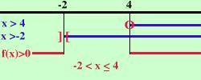

|
x - 4 --------- x + 2 Pongo sia il numeratore che il denominatore maggiori di zero (si fa sempre cosi' anche se devo trovare dove l'espressione e' minore od uguale a zero) x - 4 x + 2 Ho posto il numeratore maggiore od uguale a zero perche' stavolta devo cercare anche i valori dove l'espressione vale zero ed una frazione e' zero quando sopra (il numeratore) e' zero. Invece il denominatore non potra' mai essere uguale a zero Risolvo x x faccio lo schema x x f(x) + + + + ]-2[ - - - - - - (4) + + + + + + + + + f(x) indica l'espressione di partenza La parentesi tonda indica che l'espressione si annulla nel punto mentre la quadra indica che il valore non e' accettabile ]-2[ non e' accettabile perche' annulla il denominatore e non si puo' mai dividere per zero Io devo cercare dove l'espressione e' negativa o nulla e questo succede per x maggiore di - 2 ed x minore od uguale a 4 -2 oppure in altra notazione  |